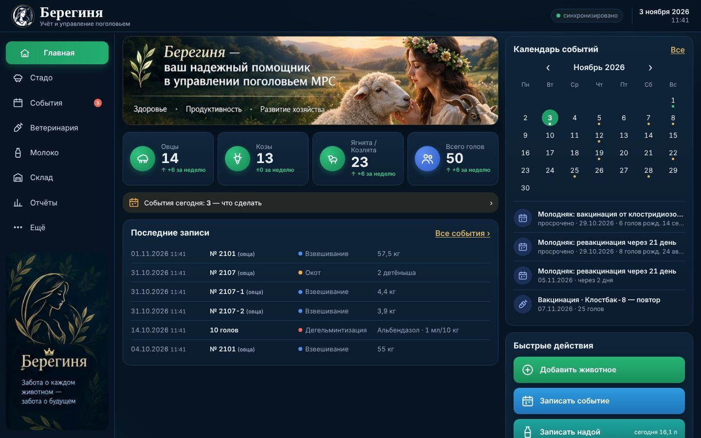
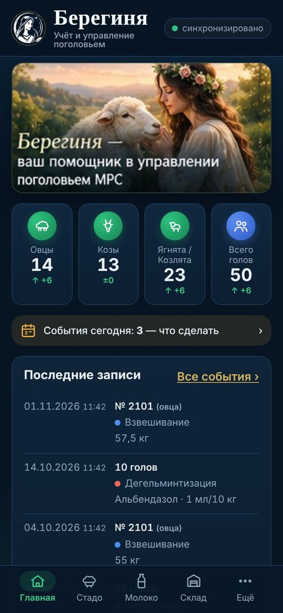
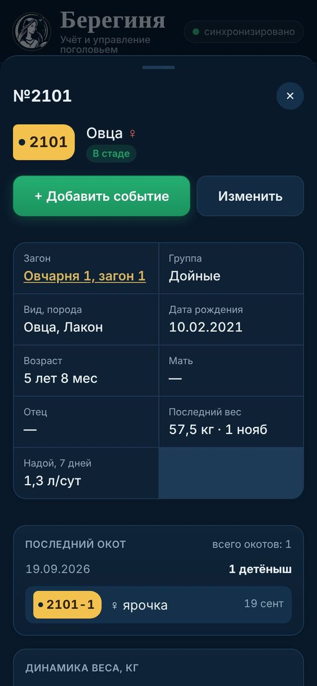
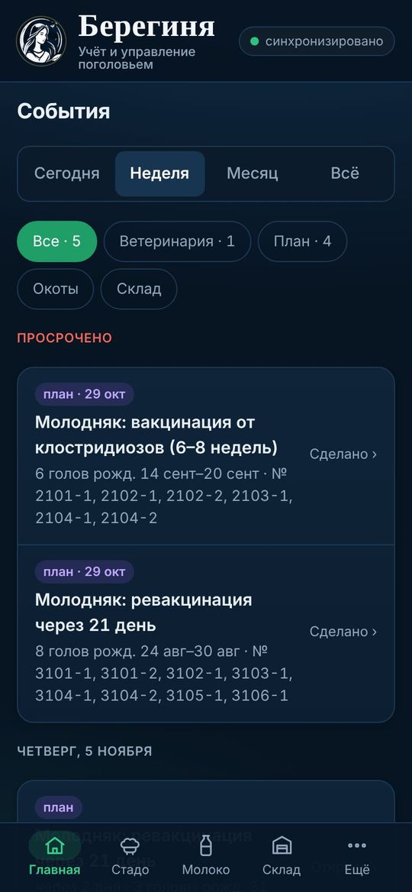
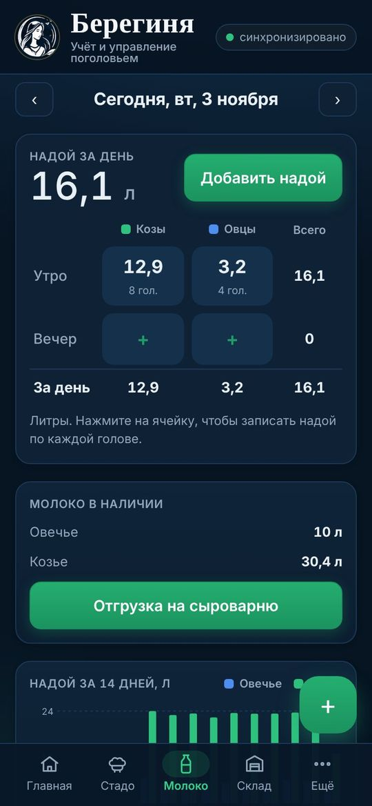
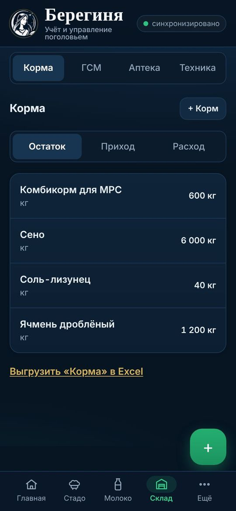
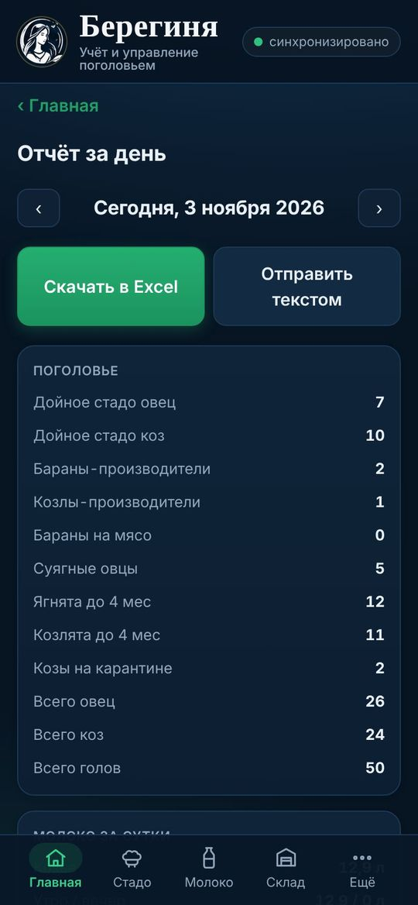

Берегинявся работа хозяйства — в одной программе на телефоне и компьютере
Стадо по загонам, ветеринария по схемам, окоты, надои, склад кормов и ГСМ, отчёты и акты в Excel. Каждый сотрудник видит свой участок работы, а записи сразу появляются у всех.


Три шага до работы
Программа закрытая: данные хозяйства видят только сотрудники, которых одобрил администратор.
Подайте заявку
Укажите фамилию и имя, должность, почту и придумайте пароль. Почта нужна только для входа — писем на неё не приходит.
Подать заявкуДождитесь одобрения
Администратор назначит вам роль. Пока он этого не сделал, программа покажет «Заявка отправлена» — после одобрения откроется сама.
Установите и работайте
Добавьте значок на экран телефона или компьютера — инструкция ниже. Дальше программа работает и без интернета.
Как установитьЧто умеет программа
От карточки каждого животного до отчёта за день и акта выбытия для бухгалтерии.
Стадо и загоны
Карточка каждой овцы и козы: бирка, загон, группа, возраст, мать и отец, вес, надой, история. Поиск по бирке, перевод между загонами и группами.
Ветеринария по схемам
Лечение, вакцинация, дегельминтизация, витамины. Программа сама напомнит, кого и чем колоть каждый день, и через сколько дней ревакцинация.
Окоты и генетика
Окот с карточками детёнышей сразу: бирка, пол, вес, порода. Подбор баранов без близкого родства по родословной.
Молоко
Надои утро и вечер, козье и овечье, отгрузки на сыроварню, остаток в танке, средний удой на голову.
Склад
Корма, ГСМ, ветаптека и техника: приход, расход, остатки, сроки годности. Заправка техники с указанием, кто заправлял.
События и годовой план
Что сделать сегодня и что впереди: уколы, ревакцинации, ожидаемые окоты, пробы молока в лабораторию — с напоминанием заранее.
Отчёты и Excel
Отчёт за день в Excel или текстом, выгрузка любого раздела за период, табель кормления для печати.
Акт выбытия СП-54
Убой и падеж за месяц — готовый акт по типовой форме: номера, даты рождения, причина, диагноз.
Роли и журнал
У каждого сотрудника свой доступ. Администратор видит, кто, когда и что внёс или изменил.





Кто что видит и делает
Роль назначает администратор. Выгрузка в Excel есть у всех — по своим разделам.
| Роль | Что может | Excel |
|---|---|---|
| Администратор | Всё в программе, журнал изменений, пользователи и роли | все разделы |
| Управляющий по эксплуатации | Всё, кроме ветеринарии; видит, кто что внёс, может исправлять | всё, кроме ветеринарии |
| Бригадир | Вносит все записи, но не исправляет и не удаляет их | все разделы |
| Ветеринарный врач | Ветаптека, лечение, вакцинация, обработки, схемы, манипуляции, окоты, молоко | стадо, окоты, ветеринария, молоко |
| Кормач | Склад кормов: приход, расход, остатки; табель и рационы по загонам | корма, загоны |
| Механизатор | Техника и ГСМ: заправки, приход топлива | ГСМ, техника |
| Пользователь | Только просмотр и выгрузка — например, для бухгалтера | все разделы |
Как установить
Программа ставится прямо из браузера — без Google Play и App Store. Сначала войдите с интернетом, потом добавьте значок.
- Откройте программу в Google Chrome: dimaproba31-dev.github.io/Bereginya.
- Войдите своей почтой и паролем. Дождитесь зелёной надписи синхронизировано вверху.
- Нажмите меню ⋮ справа вверху → «Установить приложение». Если такого пункта нет — «Добавить на главный экран» → «Установить».
- На экране появится значок «Берегиня». Открывайте программу только с него.
В Яндекс Браузере, Samsung Internet и Opera пункта «Установить» может не быть. Если Chrome нет — скачайте его бесплатно из Google Play.
- Откройте программу в Safari (синий компас): dimaproba31-dev.github.io/Bereginya.
- Войдите и дождитесь надписи синхронизировано.
- Нажмите «Поделиться» — квадрат со стрелкой вверх (внизу экрана на iPhone, вверху на iPad).
- Пролистайте вниз → «На экран «Домой»» → «Добавить».
- Откройте программу с нового значка и войдите ещё раз — на iPhone значок хранит вход отдельно от Safari.
Если ссылка открылась внутри Telegram или WhatsApp, нажмите «…» → «Открыть в Safari».
- Откройте программу в Google Chrome или Microsoft Edge, войдите.
- Chrome: значок «Установить» справа в адресной строке (монитор со стрелкой) или меню ⋮ → «Сохранить и поделиться» → «Установить страницу как приложение».
- Edge: меню … → «Приложения» → «Установить этот сайт как приложение».
- Программа откроется в своём окне, значок появится на рабочем столе и в меню «Пуск».
На компьютере удобно смотреть отчёты, выгружать Excel и печатать акты и табели.
Работает в кошаре и на пастбище
Включать ничего не нужно: после первого входа программа и данные хранятся на устройстве. Записи без связи сохраняются сразу и уходят на сервер, когда связь появится.
Всё отправлено, вы видите записи всех сотрудников.
Нет связи. Ваши записи сохранены на устройстве и уйдут сами.
Нет связи, неотправленных записей нет.
- Не выходите из учётной записи без интернетаИначе неотправленные записи могут пропасть.
- Не очищайте данные браузераИ не удаляйте значок, пока вверху «ждёт отправки».
- Раз в день выходите на связьОткройте программу на минуту — записи отправятся, а у вас появятся записи коллег.
Частые вопросы
Сколько стоит и нужно ли что-то скачивать?
Для сотрудников бесплатно. Скачивать из магазинов ничего не нужно: программа ставится из браузера и занимает несколько мегабайт.
Подал заявку, а программа не открывается
Это нормально: доступ появляется после того, как администратор назначит роль. Держите страницу открытой или зайдите позже — программа откроется сама.
Забыл пароль
Напишите администратору — он сбросит пароль, и вы зададите новый.
Не вижу какой-то раздел или кнопку
Разделы зависят от роли. Если вам нужен доступ к другим разделам — обратитесь к администратору.
Пишет «Только просмотр», когда исправляю запись
Ваша роль не может менять эту запись. Исправить её может администратор или управляющий.
Как обновить программу?
Обновления приходят сами. Если изменений не видно — закройте программу полностью и откройте снова при включённом интернете.
Не пропадут ли данные?
Все записи хранятся на сервере и на устройствах сотрудников. Если два человека без связи исправили одну карточку, останется исправление, отправленное последним; новые записи не теряются никогда.
Готовы начать?
Войдите, если у вас уже есть учётная запись, или подайте заявку.